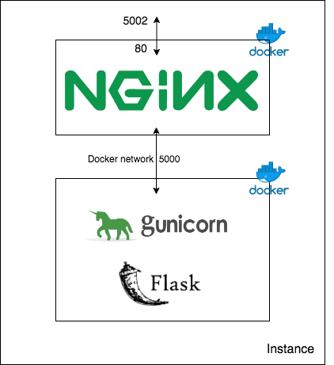

class: center, middle # Deploying an API Thibault Allart --- # What are microservices ? <br> .center[ <img src="img/micro-services.png" style="height: 400px;" /> ] .bottom[.right[ <sup>image from https://microservices.io/</sup> ]] --- # Example: Uber microservices .center[ <img src="img/Uber-micro-services.png" style="height: 450px;" /> ] --- # Creating and deploying an API We will create an API for our Recommender System (Agent) that can be requested by users (Environment). We will use the following technologies: - [Flask](https://palletsprojects.com/p/flask/) - [Docker](https://www.docker.com/) - [Nginx](https://www.nginx.com/) --- # Creating an API with Flask ```python from flask import Flask app = Flask(__name__) @app.route("/") def hello(): return "Hello World!" if __name__ == '__main__': app.run(host='0.0.0.0', port=5000) ``` http://localhost:5000/ --- # Input and outputs ```python @app.route("/add", methods=['GET', 'POST']) def predict(): input1 = request.args.get('input1') input2 = request.args.get('input2') append = input1 + input2 sum = float(input1) + float(input2) d = {'sum': sum, 'append': append} return jsonify(d) ``` Calling - http://localhost:5000/add?input1=2&input2=3.1 Return - {"append":"23.1","sum":5.1} --- # Docker Different part of an application may require different environment. .center[ <img src="img/vm_archi.png" style="height: 250px;" /> <img src="img/docker_archi.png" style="height: 250px;" /> ] "Containers virtualize the operating system instead of hardware." [Docker](https://www.docker.com/) --- # Dockerfile A simple example running Ubuntu. ```bash FROM ubuntu:18.04 # keep container running CMD tail -f /dev/null ``` Build Docker image ```bash docker build -t my_image_name . ``` Start a container with this image ```bash docker run -d --name my_container_name my_image_name ``` Run bash inside this container ```bash docker exec -it my_container_name bash ``` --- # Docker Exit bash shell: ctrl + d Stop and remove ```bash docker stop my_container_name docker rm my_container_name docker rmi my_image_name ``` --- # Adding commands ```bash FROM ubuntu:18.04 RUN apt-get update && \ apt-get -y upgrade && \ apt-get install -y build-essential && \ apt-get install -y software-properties-common && \ apt-get install -y curl wget git htop vim # keep container running CMD tail -f /dev/null ``` --- # Flask API Dockerfile ```bash # Inherit from Python 3.6 image FROM python:3.6 # Set a working directory WORKDIR /usr/src # Copy requirements COPY requirements.txt . # Install requirements RUN pip install -r requirements.txt # Copy current folder COPY . . # Run python code CMD python app.py ``` --- # Web server .center[  ] --- # Docker-compose ```bash version: '3' services: flask_app: container_name: flask_app restart: always build: ./flask_app command: gunicorn app:app -w 1 -b :5000 nginx: container_name: nginx restart: always build: context: nginx args: - PROXY_PASS=http://flask_app:5000 ports: - "5002:80" depends_on: - flask_app ``` --- # Check you can access the environment API Once deployed you can call the api using your browser, that should print a beautifull <i>Hello World!</i> If you deployed it on a remote server replace 0.0.0.0 by the server ip adress. ```http http://0.0.0.0:5002 ``` You can also do it in command line with curl ```bash curl "http://0.0.0.0:5002" ``` Passing parameters ```http http://0.0.0.0:5002/add?input1=2&input2=3.1 ``` --- # Calling an API with requests ```python import requests r = requests.get(url='http://0.0.0.0:5002/add', params={'input1': 2, 'input2': 3.1}) data = r.json() ``` <i>data</i> is then a dict containing the returned <i>key:values</i>. <br>